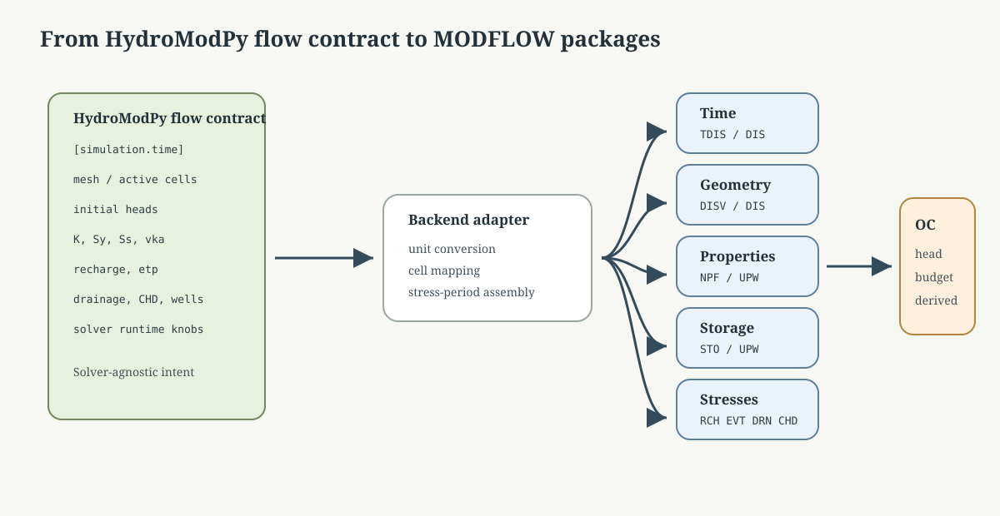
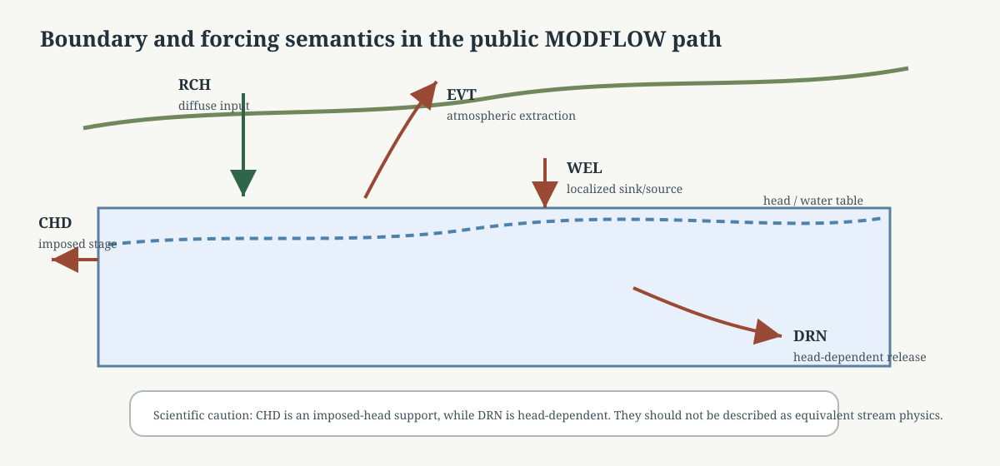

MODFLOW Package Semantics And Option Selection#
Purpose#
This page explains how HydroModPy currently uses MODFLOW-family packages in practice.
Its goal is narrower than a full MODFLOW manual and more concrete than a high-level backend overview:
identify which MF6 and NWT packages HydroModPy actually assembles,
explain why those package families are used,
justify the main project-level option choices against the official MODFLOW documentation and the current HydroModPy code path,
make clear which simplifications belong to HydroModPy rather than to MODFLOW itself.
Primary Official Anchors#
The scientific statements on this page should stay aligned with these primary references:
USGS TM 6-A55, Documentation for the MODFLOW 6 Groundwater Flow Model
USGS TM 6-A56, Documentation for the XT3D Option in the Node Property Flow Package of MODFLOW 6
USGS TM 6-A37, MODFLOW-NWT, A Newton Formulation for MODFLOW-2005
The HydroModPy documentation should synthesize these sources at project level, not restate them package by package without context.
Current Code Anchors#
The current public package choices are mainly assembled in the following code locations:
hydromodpy/solver/modflow6/modflow6.pyhydromodpy/solver/modflow6/flow_to_modflow_adapter.pyhydromodpy/solver/modflow6/modflow6_config.pyhydromodpy/solver/modflow_nwt/nwt/nwt_solver.pyhydromodpy/solver/modflow_nwt/nwt/flow_to_modflow_adapter.pyhydromodpy/solver/modflow_nwt/nwt/nwt_config.pyhydromodpy/physics/flow/time_forcing.pyhydromodpy/physics/forcing/time_alignment.py
These are the code anchors a contributor should read when checking whether the public scientific page still matches the real package assembly.
Current Public Package Subset#
HydroModPy intentionally uses a compact MODFLOW subset in its public flow path.
{kind=link}

Fig. 75 The important documentation boundary is the adapter. Upstream of it, HydroModPy stores solver-agnostic scientific intent. Downstream of it, each MODFLOW backend receives package-specific payloads and output-control requests.#
HydroModPy concern |
MODFLOW 6 public path |
MODFLOW-NWT public path |
Current project reading |
|---|---|---|---|
Time discretization |
|
|
Driven from |
Nonlinear / linear solve |
|
|
Expert knobs are exposed, but HydroModPy still chooses defaults and safety rules |
Geometry |
|
structured |
MF6 keeps one unified solver-mesh export path; NWT stays structured |
Initial heads |
|
|
Built from process-level initial-condition policy |
Internal flow properties |
|
|
This is one of the major scientific differences between the backends |
Storage |
|
|
|
Diffuse recharge |
|
|
MF6 uses array-style recharge; NWT accepts scalar/series/grid payloads |
Evapotranspiration |
|
|
Mainly explicit ETP or negative-recharge routing |
Imposed heads |
|
|
Used for side, stream, and ocean stage-style supports in the current public path |
Drainage |
|
|
Head-dependent outflow in both MODFLOW branches |
Wells |
|
|
Process-level wells are resolved to solver cells late |
Output control |
|
|
Head and budget outputs are always requested in the current path |
What HydroModPy Is Deliberately Not Claiming#
The public path should not be described as if every MODFLOW package family were already a maintained modelling route.
Today the main public groundwater-flow subset is centred on:
DISV/DIS,NPF/UPW,STOor equivalent storage arrays,RCHA/RCH,EVT,CHD,DRN,WEL,OC.
That means the public scientific docs should stay careful about packages such
as RIV, GHB, SFR, UZF, LAK, or DISU. They may exist in
the MODFLOW family, and some may exist in code discussions or future plans,
but they are not yet the stable public HydroModPy flow narrative.
MODFLOW 6: Option Selection Rationale#
TDIS#
HydroModPy builds ModflowTdis from the canonical launcher time grid rather
than from one backend-private chronology.
Current project choice:
npercomes from[simulation.time],perioddatais built from the resolved period lengths and time-step counts,tsmultis currently fixed to1.0in the MF6 wrapper.
The last point is a HydroModPy simplification, not an MF6 requirement. The
MF6 TDIS contract allows (perlen, nstp, tsmult) per period; the
current wrapper simply does not yet expose variable tsmult in the public
MF6 path.
IMS#
HydroModPy exposes the following main IMS knobs in
modflow6.runtime:
mf6_ims_complexitymf6_outer_dvclosemf6_inner_dvclosemf6_outer_maximummf6_inner_maximum
The code path uses them in ModflowIms(...) almost directly.
The main project-specific rule is this:
if XT3D is active and the user requested
SIMPLE, HydroModPy upgrades the effective complexity toCOMPLEX.
This is an inference from the current code and the MF6/XT3D documentation, not an explicit MF6 mandate. The rationale is that XT3D adds extra coupling terms and can increase numerical difficulty, so HydroModPy chooses a conservative solver preset instead of leaving an obviously weak one in place.
DISV#
HydroModPy currently builds ModflowGwfdisv even for the structured MF6
path.
That is a HydroModPy architecture choice, not an MF6 constraint. The reason is
to keep one unified SolverMesh -> to_disv_kwargs() export contract for:
structured supports,
runtime irregular supports,
shared-support comparison workflows.
Scientifically, this keeps the MF6 branch more uniform, but it also means the project should document clearly when a comparison is:
backend-only,
or backend plus discretization-contract change.
IC#
Starting heads are built from the process-level initial-condition policy:
topbottomcustom
This stays intentionally simple. HydroModPy does not currently expose one advanced public MF6 initial-condition narrative beyond those three policies.
NPF#
The current MF6 NPF assembly is one of the most important scientific
choices in the project.
HydroModPy currently sets:
icelltype = 1for all layers,kfrom the mapped conductivity field,k33 = k / vka,optional
rewet_recordandwetdry,optional
xt3doptions = ["XT3D"],save_specific_discharge = True,save_saturation = True.
Why these choices make sense:
icelltype: the MF6 documentation says this flag controls whether saturated thickness is held constant or varies with head. HydroModPy uses the convertible path because its public MF6 use is mainly unconfined or water-table style groundwater modelling.k33 = k / vka: the project exposes one simple vertical-anisotropy control inmodflow6.process_specific.vkainstead of requiring the user to manage an independent fullk33field in the common path.rewetting: MF6
REWETis off by default in the official package, and HydroModPy keeps it disabled unless explicitly enabled throughmf6_enable_rewet. That is a deliberate conservative choice: rewetting changes the nonlinear behaviour and should remain visible.XT3D: the official docs present XT3D as more expensive but more accurate for anisotropic conductivity and irregular grids. HydroModPy therefore auto- enables XT3D on unstructured meshes unless the user overrides the choice.
save_specific_dischargeandsave_saturation: these are project-facing diagnostics choices. HydroModPy uses them because postprocessing, interpretation, and comparison artifacts benefit directly from those outputs.
HydroModPy does not currently activate many other available NPF options
such as VARIABLECV, PERCHED, or alternative cell averaging in the
public path. That absence should be documented honestly rather than left
implicit.
STO#
HydroModPy currently builds STO with:
syssiconvert = 1for all layersone per-period steady/transient map derived from the time grid
The official STO documentation distinguishes:
ICONVERTSSSYperiod
STEADY-STATE/TRANSIENTflags
HydroModPy keeps the interpretation simple:
SSis treated as specific storage, not storage coefficient,SYis retained as the unconfined drainable storage term,every layer is treated through the convertible path,
the stress-period flags are driven from the launcher-level time definition.
That means HydroModPy does not currently expose STORAGECOEFFICIENT or
SS_CONFINED_ONLY as part of its public MF6 contract.
RCHA#
HydroModPy currently uses ModflowGwfrcha instead of the list-style RCH
package.
This choice is well aligned with the way the code works:
forcing is resolved to one value per stress period,
heterogeneous forcing is discretized to one value per cell,
the resulting natural internal representation is an array, not a sparse list of recharge cells.
The official RCHA documentation explicitly defines the array-based
READASARRAYS path, which matches HydroModPy well.
HydroModPy also adds an auxiliary CONCENTRATION slot on RCHA. That is a
project choice made for the current MF6-GWT coupling path, not a groundwater-
flow necessity.
EVT#
HydroModPy builds EVT only when one of these is true:
explicit ETP forcing exists,
negative recharge is rerouted to evapotranspiration.
The project currently feeds the package with the simple
cellid, surface, rate, depth structure rather than with more advanced
piecewise extinction options.
The important HydroModPy choices are:
surface elevation is taken from topography minus one configured offset,
extinction depth is one explicit runtime parameter,
stream and ocean support cells are excluded from the current public EVT path.
This is a reasonable compact contract, but it is not yet a full public theory of land-surface evapotranspiration.
CHD, DRN, WEL, and OC#
{kind=link}

Fig. 76 The current public path deliberately separates diffuse forcing, atmospheric extraction, imposed-head supports, head-dependent drainage, and localized wells. This matters when comparing basin studies because equal-looking map overlays may come from different physical boundary semantics.#
HydroModPy currently makes the following public choices:
CHD: used for side, stream, and ocean stage-style boundaries.DRN: used for head-dependent drainage or seepage-style release.WEL: used for wells resolved late from process-level declarations to solver-cell addresses.OC: configured to save heads and budgets systematically.
The strongest scientific caveat is on CHD:
using
CHDfor stream or ocean means the public path is stage-controlled and imposed-head based,not a full
RIVorGHBconductance law.
That simplification is currently part of HydroModPy’s public scientific contract and should be reported explicitly in comparison or basin-study pages.
MODFLOW-NWT: Option Selection Rationale#
NWT solver package#
HydroModPy exposes the main Newton-solver fields under
modflownwt.runtime.nwt:
headtolfluxtolmaxiteroutthickfactlinmethibotavoptionscontinue_runbackflagstoptol
The official NWT guide explains that OPTIONS may be SIMPLE,
MODERATE, COMPLEX, or SPECIFIED. HydroModPy currently defaults to
COMPLEX in the validated config, which is a conservative project choice
suited to the fact that the public NWT path is mainly kept for structured,
unconfined, and comparison-oriented cases rather than only for nearly linear
confined benchmarks.
HydroModPy should not overclaim these defaults as universally optimal. Several
NWT parameters, especially IBOTAV and the nonlinear-control family, remain
problem-specific and are correctly exposed as expert settings rather than hard
scientific truths.
DIS and BAS#
The NWT branch stays on the structured grid path:
structured solver mesh only,
ModflowDisfor geometry and time metadata,ModflowBasforiboundand starting heads.
This is a deliberate HydroModPy split:
MF6 carries the modern unified mesh route,
NWT remains the historical structured baseline.
UPW#
The official NWT report states that MODFLOW-NWT must be used with the Upstream-Weighting package.
That is why HydroModPy does not present LPF or HUF as alternate public
NWT flow paths. The NWT branch is intentionally a UPW branch.
HydroModPy currently sets:
laytype = 1for all layers,laywet = 0for all layers,hksyssvkafrommodflownwt.process_specific.vkaiphdryhdrylayvka
The official UPW guide explains that:
LAYVKAcontrols whetherVKAis interpreted as vertical hydraulic conductivity or as the horizontal-to-vertical ratio,IPHDRYcontrols whether dry-cell heads are written asHDRY,HDRYis mainly an output indicator rather than a governing parameter.
This aligns well with the HydroModPy contract:
one compact anisotropy control
vka,one explicit
layvkainterpretation flag,one explicit dry-cell output policy through
iphdryandhdry.
Recharge, EVT, DRN, WEL, and OC#
The current NWT branch mirrors the same broad semantic logic as MF6:
RCHfor diffuse recharge,EVTfor explicit ETP or negative-recharge rerouting,DRNfor head-dependent drainage,WELfor pumping or injection,CHDfor imposed-head boundaries,OCfor systematic head and budget outputs.
Two extra points matter scientifically:
rate payloads are converted from SI to solver time units using
ITMUNI, so the unit bridge should remain explicit in the docs;RCHandEVTare still fed from the same upstream forcing semantics as MF6, even though the package syntax differs.
HydroModPy-Specific Simplifications To Keep Explicit#
The following are project-level simplifications and should not be mistaken for generic MODFLOW truths:
stream and ocean are currently mostly public
CHDpaths, not fullRIVorGHBlaws;MF6 uses
DISVas the unified geometry export path, even for structured supports;MF6 currently keeps
tsmult = 1.0inTDISin the public wrapper;the common MF6 path uses one simple
k33 = k / vkarule rather than a fully independent 3D conductivity tensor description;NWT remains intentionally tied to
UPWand the structured-grid branch.
What Should Be Reported In A Methods Section#
If one HydroModPy study relies on a MODFLOW backend, its methods section should normally state:
backend family:
modflow6ormodflow_nwt,geometry contract: structured
DISor unifiedDISVpath,whether XT3D is active,
whether rewetting is active,
whether stream or ocean boundaries are currently represented as imposed-head supports,
how recharge and ETP were aggregated to stress periods,
whether
first_climoverrides period 0,whether
vkais used as an anisotropy ratio or direct vertical conductivity control.
Without that information, many apparent solver differences remain ambiguous.
Current Limitation#
This page now explains the current public package subset and the main option choices, but it still does not replace:
the full official MODFLOW package manuals,
a future page on the exact MF6/NWT forcing-to-package payload examples,
or one future worked example that follows a full HydroModPy case from TOML to final package files.